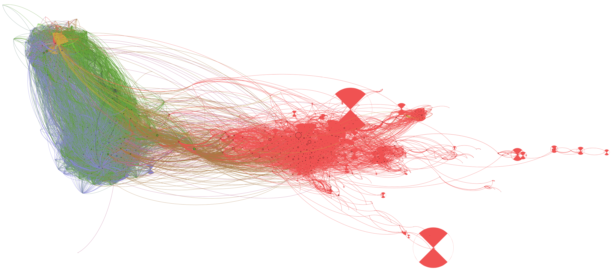

Bachelor Paper • 2019
Mapping the Connection between Celebrities and Politicians on Twitter
This is my first ever computational social science project, conducted under the supervision of prof. Chris Bail during a course at the Venice International Universtity. We mapped the connections between US celebrities and politicians from the US house of representatives on Twitter using social network analysis.
The results show little connection – in terms of retweets, citations, and likes – between the two classes (in the vizualization below, politicians are on the left and celebrities on the right).
